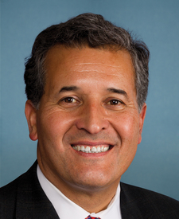

خوان وارگاس
Juan Vargas
نماینده، دموکرات، کالیفرنیا
نمرهٔ خوان وارگاس دربارهٔ ایران: ۵۴ از ۱۰۰.
- حمایت از شاهزاده رضا پهلویهنوز چیزی ثبت نشده
- خواستار رفتن جمهوری اسلامی۴۸
- همراهی با مردم ایران۱۰۰
- بدون ارتباط با مجاهدین خلق۴ ارتباط: ۲۰ امتیاز منفی
نمره میانگین سه معیار اوله (هر کدوم که عدد داشته باشه)، منهای امتیازی که به خاطر ارتباط با مجاهدین خلق کم میشه. چطور نمره میدم
حمایت از شاهزاده رضا پهلوی
هنوز چیزی ثبت نشده
باهاش دیدار کرده، علناً ازش حمایت کرده یا از کاخ سفید خواسته باهاش همکاری کنه. عضو کنگرهای که بگه ایرانیها پادشاهی رو رد کردن مخالف حساب میشه.
هیچ سندی ندارم که نشون بده خوان وارگاس دربارهٔ شاهزاده رضا پهلوی چی گفته یا چی کار کرده. شما چیزی دیدید؟ یه سخنرانی، یه دیدار، یه پست، یه نامه.
سندش رو برام بفرستیدخواستار رفتن جمهوری اسلامی
۴۸از ۱۰۰
به تحریم و فشار رأی مثبت میده. به هر توافقی که رژیم رو سر پا نگه داره و به بیرون کشیدن نیروهای آمریکا از درگیری رأی منفی میده.
- منفی
رأی موافق داد: قطعنامهٔ اختیارات جنگی دربارهٔ ایران (H.Con.Res. 93) رأی کلیدی، دو برابر حساب میشه
رئیسجمهور رو موظف میکنه نیروهای آمریکا رو از درگیری با جمهوری اسلامی خارج کنه، بهجز نیروهایی که برای دفاع از آمریکا یا یکی از متحدهاش مقابل حملهٔ قریبالوقوع لازمن؛ مگه اینکه کنگره مجوز استفاده از نیروی نظامی بده. رأی مثبت به این قطعنامه یعنی رأی به بیرون کشیدن نیروهای آمریکا از جنگ با جمهوری اسلامی.
۱۵ سپتامبر ۲۰۲۶ · سند رسمی
- منفی
رأی موافق داد: قطعنامهٔ اختیارات جنگی دربارهٔ ایران (H.Con.Res. 89)
رئیسجمهور رو موظف میکنه نیروهای آمریکا رو از درگیری با جمهوری اسلامی خارج کنه. رأی مثبت به این قطعنامه یعنی رأی به بیرون کشیدن نیروهای آمریکا از جنگ با جمهوری اسلامی.
۲۳ ژوئیه ۲۰۲۶ · سند رسمی
- منفی
رأی موافق داد: قطعنامهٔ اختیارات جنگی دربارهٔ ایران (H.Con.Res. 86) رأی کلیدی، دو برابر حساب میشه
رئیسجمهور رو موظف میکنه نیروهای آمریکا رو از درگیری با جمهوری اسلامی خارج کنه، بهجز نیروهایی که برای دفاع از آمریکا یا یکی از متحدهاش مقابل حملهٔ قریبالوقوع لازمن؛ مگه اینکه کنگره مجوز استفاده از نیروی نظامی بده. رأی مثبت به این قطعنامه یعنی رأی به بیرون کشیدن نیروهای آمریکا از جنگ با جمهوری اسلامی.
۳ ژوئن ۲۰۲۶ · سند رسمی
- منفی
رأی موافق داد: قطعنامهٔ اختیارات جنگی دربارهٔ ایران (H.Con.Res. 75)
رئیسجمهور رو موظف میکنه نیروهای آمریکا رو از درگیری با جمهوری اسلامی خارج کنه. رأی مثبت به این قطعنامه یعنی رأی به بیرون کشیدن نیروهای آمریکا از جنگ با جمهوری اسلامی.
۱۴ مه ۲۰۲۶ · سند رسمی
- منفی
رأی موافق داد: قطعنامهٔ اختیارات جنگی دربارهٔ ایران (H.Con.Res. 40)
رئیسجمهور رو موظف میکنه نیروهای آمریکا رو از درگیری با جمهوری اسلامی خارج کنه. رأی مثبت به این قطعنامه یعنی رأی به بیرون کشیدن نیروهای آمریکا از جنگ با جمهوری اسلامی.
۱۶ آوریل ۲۰۲۶ · سند رسمی
- مثبت
رأی موافق داد: تأکید دوباره بر اینکه جمهوری اسلامی همچنان بزرگترین دولت حامی تروریسم است (H.Res. 1099)
اعلام میکنه سیاست آمریکا اینه که جمهوری اسلامی هنوز هم بزرگترین دولت حامی تروریسم تو دنیاست. به حمایتش از حزبالله، حماس و حوثیها و به آمریکاییهایی اشاره میکنه که جمهوری اسلامی مسئول کشته شدنشونه. موضع مجلس نمایندگان علیه رژیم رو تو اولین روزهای جنگ ۲۰۲۶ رسماً ثبت میکنه.
۵ مارس ۲۰۲۶ · سند رسمی
- مثبت
رأی مخالف داد: قطعنامهٔ اختیارات جنگی دربارهٔ ایران (H.Con.Res. 38) رأی کلیدی، دو برابر حساب میشه
رئیسجمهور رو موظف میکنه استفاده از نیروهای آمریکا تو درگیری با جمهوری اسلامی رو متوقف کنه، مگه اینکه کنگره اعلام جنگ کنه یا مجوز استفاده از نیروی نظامی بده. رأی مثبت به این قطعنامه یعنی رأی به بیرون کشیدن نیروهای آمریکا از جنگ با جمهوری اسلامی.
۵ مارس ۲۰۲۶ · سند رسمی
- مثبت
امضا کرد: قانون تشدید تحریمهای ایران، ۲۰۲۵ (H.R. 1422)
هر شرکت، بندر، پالایشگاه یا کشتی خارجی رو که به فرآوری، صادرات یا فروش نفت و گاز جمهوری اسلامی کمک کنه تحریم میکنه. میره سراغ پول نفتی که رژیم رو سرپا نگه داشته.
۱۸ فوریه ۲۰۲۵ · سند رسمی
- مثبت
رأی موافق داد: محکومیت حملهٔ پهپادی و موشکی جمهوری اسلامی به اسرائیل (H.Res. 1143)
حملهٔ پهپادی و موشکی جمهوری اسلامی به اسرائیل تو آوریل ۲۰۲۴ رو محکوم میکنه و از حق اسرائیل برای دفاع از خودش حمایت میکنه. مقابل حملهٔ مستقیم رژیم به یکی از متحدهای آمریکا وایساده.
۱۸ آوریل ۲۰۲۴ · سند رسمی
- منفی
رأی مخالف داد: قانون ایستادگی در برابر تجاوز حوثیها (H.R. 6046)
الزام میکنه که حوثیها، نیرویی که جمهوری اسلامی تو یمن ازش حمایت میکنه، برن تو فهرست سازمانهای تروریستی خارجی و تحریم بشن. یکی از اصلیترین نیروهای نیابتی رژیم رو زیر فشار حداکثری میذاره.
۱۷ آوریل ۲۰۲۴ · سند رسمی
- منفی
رأی مخالف داد: قانون بررسی کاهش تحریمهای ایران (H.R. 4691)
به کنگره اجازه میده هر اقدام رئیسجمهور برای لغو تحریمهای جمهوری اسلامی یا صدور معافیت ازشون رو بررسی کنه و جلوش رو بگیره. دادن تخفیف تحریمی به رژیم رو برای هر دولتی سختتر میکنه.
۱۷ آوریل ۲۰۲۴ · سند رسمی
- منفی
رأی مخالف داد: لغو معافیتهای تحریمی ایران (H.R. 5947)
معافیتهایی رو لغو میکنه که به جمهوری اسلامی اجازه داد به حدود ۶ میلیارد دلار از پولهاش تو خارج دسترسی پیدا کنه و صدور معافیتهای جدید مشابه رو ممنوع میکنه. تخفیف تحریمی رو که به رژیم داده بودن پس میگیره.
۱۷ آوریل ۲۰۲۴ · سند رسمی
- منفی
رأی مخالف داد: قانون «نه به تأمین مالی آمریکا برای ایران» (H.R. 5921)
به وزارت خزانهداری آمریکا اجازه نمیده برای معاملات مالی آمریکایی مرتبط با تجارت با ایران مجوز بده، مگه برای کالاهای بشردوستانه. از نمایندههای آمریکا هم میخواد با کمک صندوق بینالمللی پول به جمهوری اسلامی مخالفت کنن. دست رژیم رو از نظام مالی آمریکا و کمکهای مالی بینالمللی کوتاه میکنه.
۱۵ آوریل ۲۰۲۴ · سند رسمی
- مثبت
رأی موافق داد: قانون «نه به تأمین مالی تروریسم جمهوری اسلامی» (H.R. 5961) رأی کلیدی، دو برابر حساب میشه
حدود ۶ میلیارد دلار پول ایران رو که تو توافق تبادل زندانیهای سال ۲۰۲۳ به قطر منتقل شد مسدود میکنه. برای این کار هر بانکی رو که به جمهوری اسلامی تو استفاده از این پول کمک کنه تحریم میکنه. نمیذاره پول به دست رژیم برسه و توافقی رو که به رژیم تخفیف تحریمی داده بود بیاثر میکنه.
۳۰ نوامبر ۲۰۲۳ · سند رسمی
- مثبت
رأی موافق داد: جمهوری اسلامی هستهای قابلقبول نیست (H.Res. 559)
اعلام میکنه سیاست آمریکا اینه که جمهوری اسلامی مجهز به سلاح هستهای قابلقبول نیست، باید با هر وسیلهٔ لازم جلوش رو گرفت و متحدهای آمریکا، از جمله اسرائیل، آزادن برای جلوگیری ازش اقدام کنن. آمریکا رو متعهد میکنه که به هر وسیلهای جلوی برنامهٔ هستهای رژیم رو بگیره.
۱ نوامبر ۲۰۲۳ · سند رسمی
- مثبت
رأی موافق داد: اصلاحیهٔ اوگلز بر H.R. 4665: هیچ بودجهای برای خارج کردن سپاه از فهرست تروریستی خرج نشود
یه اصلاحیه روی لایحهٔ بودجهٔ ۲۰۲۴ وزارت خارجه که اجازه نمیده هیچ پولی برای خارج کردن سپاه پاسداران از فهرست سازمانهای تروریستی خارجی خرج بشه. موندن اصلیترین نیروی مسلح رژیم تو فهرست تروریستی رو قطعی میکنه.
۲۸ سپتامبر ۲۰۲۳ · سند رسمی
- مثبت
رأی موافق داد: قانون توقف پهپادهای ایرانی (H.R. 6089)
مشخص میکنه قانون تحریمهای آمریکا شامل هر کسی میشه که به جمهوری اسلامی پهپاد جنگی بده یا بفروشه، یا ازش پهپاد جنگی بگیره. تحریمهای برنامهٔ پهپادی رژیم رو سختتر میکنه.
۲۷ آوریل ۲۰۲۲ · سند رسمی
همراهی با مردم ایران
۱۰۰از ۱۰۰
از مردمی که تو خیابان هستن حمایت میکنه: تحریم اونایی که میکشنشون، اینترنت آزاد وقتی رژیم قطعش میکنه، و اینکه کنگره رسماً اعلام کنه کنار مردمه.
- مثبت
رأی موافق داد: قانون مهسا (H.R. 589) رأی کلیدی، دو برابر حساب میشه
رئیسجمهور آمریکا رو موظف میکنه تصمیم بگیره که رهبر جمهوری اسلامی، رئیسجمهورش و دفترهای این دو نفر رو به خاطر نقض حقوق بشر و حمایت از تروریسم تحریم کنه یا نه. سران رژیم رو به خاطر رفتارشون با مردم ایران مجازات میکنه.
۱۲ سپتامبر ۲۰۲۳ · سند رسمی
- مثبت
رأی موافق داد: محکومیت آزار و اذیت اقلیت بهائی ایران (H.Res. 492)
آزار و اذیت سازمانیافتهٔ اقلیت دینی بهائی به دست حکومت رو محکوم میکنه و میخواد مقامهای مسئولش تحریم بشن. کنار ایرانیهایی وایساده که رژیم به خاطر عقایدشون آزارشون میده.
۱۲ سپتامبر ۲۰۲۳ · سند رسمی
- مثبت
رأی موافق داد: تقدیر از شجاعت معترضان ایرانی (H.Con.Res. 7) رأی کلیدی، دو برابر حساب میشه
از زنها و مردهای ایران تقدیر میکنه که بعد از کشته شدن مهسا امینی تو بیشتر از ۱۳۳ شهر اعتراض کردن و سرکوب خشونتآمیز رژیم رو محکوم میکنه. کنگره رو کنار مردم ایران و مقابل رژیم میذاره.
۲۵ ژانویه ۲۰۲۳ · سند رسمی
بدون ارتباط با مجاهدین خلق
۲۰امتیاز منفی
مجاهدین خلق یه گروه تبعیدیه به رهبری مریم رجوی که کنار صدام حسین علیه ایران جنگید. امضای یکی از قطعنامههاش تو کنگره یا سخنرانی تو مراسمهاش «ارتباط» حساب میشه.
- ارتباط
امضا کرد: حمایت از خواست مردم ایران برای جمهوری دموکراتیک، سکولار و غیرهستهای ایران (H.Res. 166)
تروریسم و سرکوب رژیم رو محکوم میکنه و به حمایت از برنامهٔ دهمادهای مریم رجوی از شورای ملی مقاومت ایران، که با مجاهدین خلق مرتبطه، اشاره میکنه. میگه معترضهای ایرانی «دیکتاتوری سلطنتی را رد کردهاند»، همونطور که حکومت دینی حاکم رو. متن این قطعنامه از برنامهٔ دهمادهای مریم رجوی، رهبر شاخهٔ سیاسی مجاهدین خلق، حمایت میکنه و میگه ایرانیها پادشاهی رو رد کردن. یعنی سر اینکه بعد از رژیم کی رهبری کنه، طرف یه گروه تبعیدی رو میگیره و مقابل شاهزاده رضا پهلوی وایمیسته. برای همین، امضا کردنش ارتباط با مجاهدین خلق حساب میشه.
۲۶ فوریه ۲۰۲۵ · سند رسمی
- ارتباط
امضا کرد: محکومیت تروریسم، جنگ نیابتی در منطقه و سرکوب داخلی رژیم ایران (H.Res. 1148)
تروریسم و جنگهای نیابتی رژیم رو محکوم میکنه، به برنامهٔ دهمادهای مریم رجوی اشاره میکنه و میگه ایرانیها هم «دیکتاتوری سلطنتی» رو رد میکنن و هم «استبداد دینی» رو. متن این قطعنامه از برنامهٔ دهمادهای مریم رجوی، رهبر شاخهٔ سیاسی مجاهدین خلق، حمایت میکنه و میگه ایرانیها پادشاهی رو رد کردن. یعنی سر اینکه بعد از رژیم کی رهبری کنه، طرف یه گروه تبعیدی رو میگیره و مقابل شاهزاده رضا پهلوی وایمیسته. برای همین، امضا کردنش ارتباط با مجاهدین خلق حساب میشه.
۱۵ آوریل ۲۰۲۴ · سند رسمی
- ارتباط
امضا کرد: حمایت از خواست مردم ایران برای جمهوری دموکراتیک، سکولار و غیرهستهای ایران (H.Res. 100)
تروریسم رژیم و کشتن معترضها رو محکوم میکنه، به حمایت از برنامهٔ دهمادهای مریم رجوی، رهبر شورای ملی مقاومت ایران که با مجاهدین خلق مرتبطه، اشاره میکنه و میگه ایرانیها «دیکتاتوری سلطنتی و استبداد دینی را رد میکنند». متن این قطعنامه از برنامهٔ دهمادهای مریم رجوی، رهبر شاخهٔ سیاسی مجاهدین خلق، حمایت میکنه و میگه ایرانیها پادشاهی رو رد کردن. یعنی سر اینکه بعد از رژیم کی رهبری کنه، طرف یه گروه تبعیدی رو میگیره و مقابل شاهزاده رضا پهلوی وایمیسته. برای همین، امضا کردنش ارتباط با مجاهدین خلق حساب میشه.
۷ فوریه ۲۰۲۳ · سند رسمی
- ارتباط
امضا کرد: حمایت از خواست مردم ایران برای جمهوری دموکراتیک، سکولار و غیرهستهای ایران (H.Res. 118)
تروریسم و نقض حقوق بشر رژیم رو محکوم میکنه، به حمایت از برنامهٔ دهمادهای مریم رجوی، رهبر شورای ملی مقاومت ایران که با مجاهدین خلق مرتبطه، اشاره میکنه و میگه ایرانیها «دیکتاتوری سلطنتی را رد کردهاند». متن این قطعنامه از برنامهٔ دهمادهای مریم رجوی، رهبر شاخهٔ سیاسی مجاهدین خلق، حمایت میکنه و میگه ایرانیها پادشاهی رو رد کردن. یعنی سر اینکه بعد از رژیم کی رهبری کنه، طرف یه گروه تبعیدی رو میگیره و مقابل شاهزاده رضا پهلوی وایمیسته. برای همین، امضا کردنش ارتباط با مجاهدین خلق حساب میشه.
۱۱ فوریه ۲۰۲۱ · سند رسمی
خوان وارگاس برای مردم کالیفرنیا کار میکنه. اگه اونجا زندگی میکنید، دفترش باید جواب شما رو بده: vargas.house.gov
ایرانیها میتونن به خوان وارگاس اعتماد کنن؟
همینجا بگید تا بقیه هم جوابتون رو بدن؛ فارسی یا انگلیسی.
گفتوگو
خوان وارگاس
نظر، ویدیو و سند دربارهٔ خوان وارگاس، فارسی و انگلیسی، همه یه جا. اینا حرف خود خوانندههاست، نه حرف من.
اطلاعات خصوصی هیچکس رو ننویسید. قوانین گفتوگو و اطلاعاتی که از شما نگه میدارم
بیاید حرف بزنیم
برنامه تو یوتیوب زنده پخش میشه و جمعش هم تو دیسکورد دور هم هستن. نمرهای رو که فکر میکنید اشتباه دادم همونجا مطرح کنید.